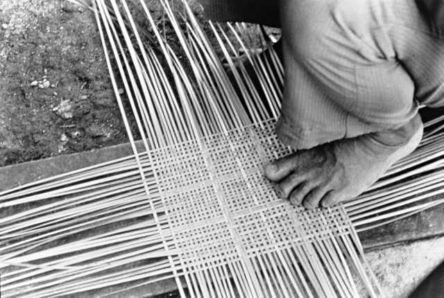

O povo Wapichana é uma etnia indígena que habita regiões no Brasil e na Guiana, com uma
presença
significativa
em Roraima, no norte do Brasil. Eles são conhecidos por sua cultura e tradições distintas, incluindo práticas
agrícolas tradicionais, como o cultivo de mandioca, feijão e milho. Além disso, a pecuária desempenha um papel
importante em suas vidas.
Atualmente, eles estão organizados em comunidades em terras demarcadas e compartilhadas com outros grupos
indígenas. A preservação de sua cultura, língua e território é uma parte fundamental de suas lutas e
identidade.
Os Wapichana obtêm recursos para a sobrevivência essencialmente na agricultura, que é realizada mediante a técnica tradicional, isto é, a coivara. Normalmente, as famílias possuem suas próprias roças, mas isso não impede que umas realizem mutirões coletivos nas roças das outras. Outra atividade relevante é a pecuária, particularmente, a criação coletiva de gado, a qual é administrada pelo tuxaua de cada maloca e que visa prover a comunidade de recursos. São também comuns as criações de ovinos e suínos, as quais são administradas por cada núcleo familiar.
Dentre os produtos cultivados destacam-se o feijão, o milho e, em especial, a mandioca. A utilidade do feijão e do milho assemelham-se ao uso empregado por não-índios; ou seja, o feijão faz parte do prato cotidiano, enquanto o milho tanto é consumido na sua forma natural quanto em seus derivados, tais como, a canjica, a pamonha etc. A mandioca, entretanto, é o alimento básico e mais tradicional deles. É consumida na forma natural e em alimentos derivados, tais como, o beiju, a farinha e a tapioca, mas, sobretudo, é utilizada na produção de bebidas especiais, como pajuaru, saboruá e caxiri, servidas tanto cotidianamente (muitas vezes como alimentação) como por ocasião de solenidades.